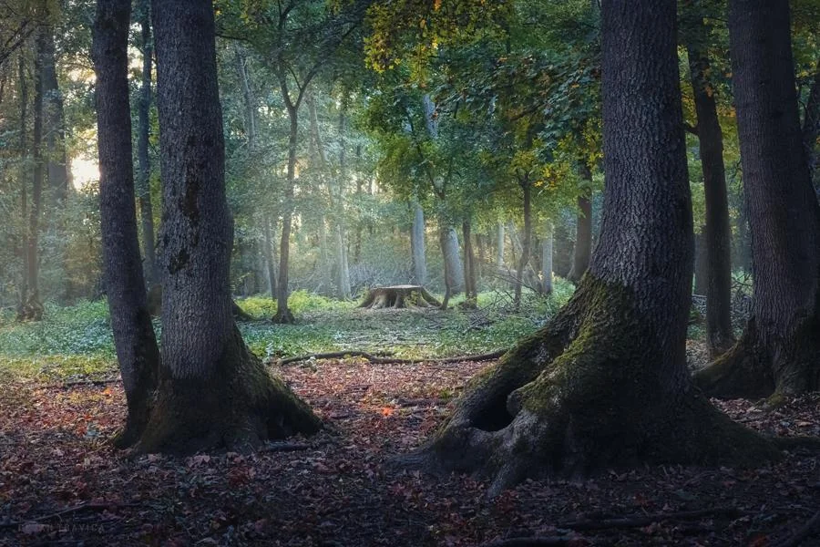
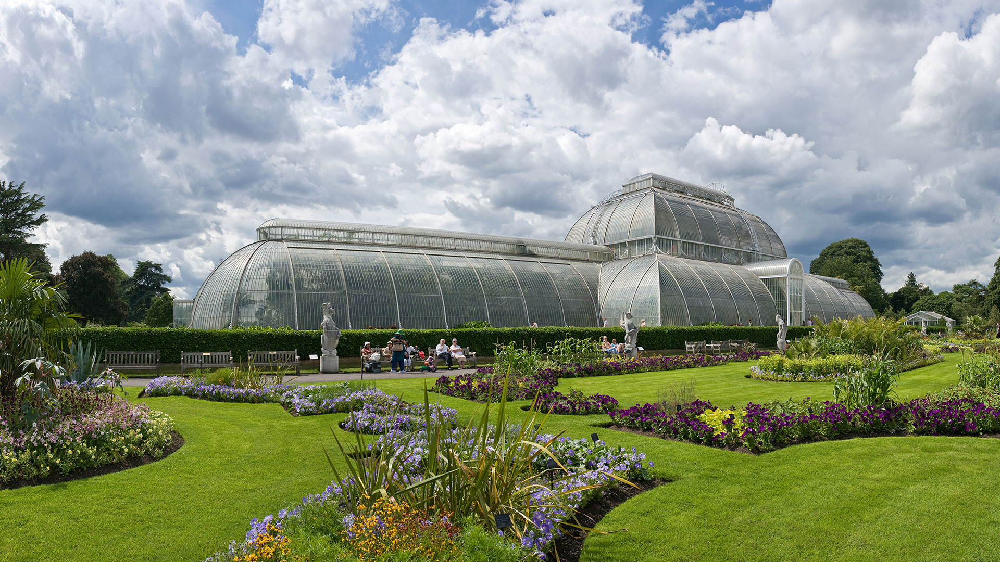
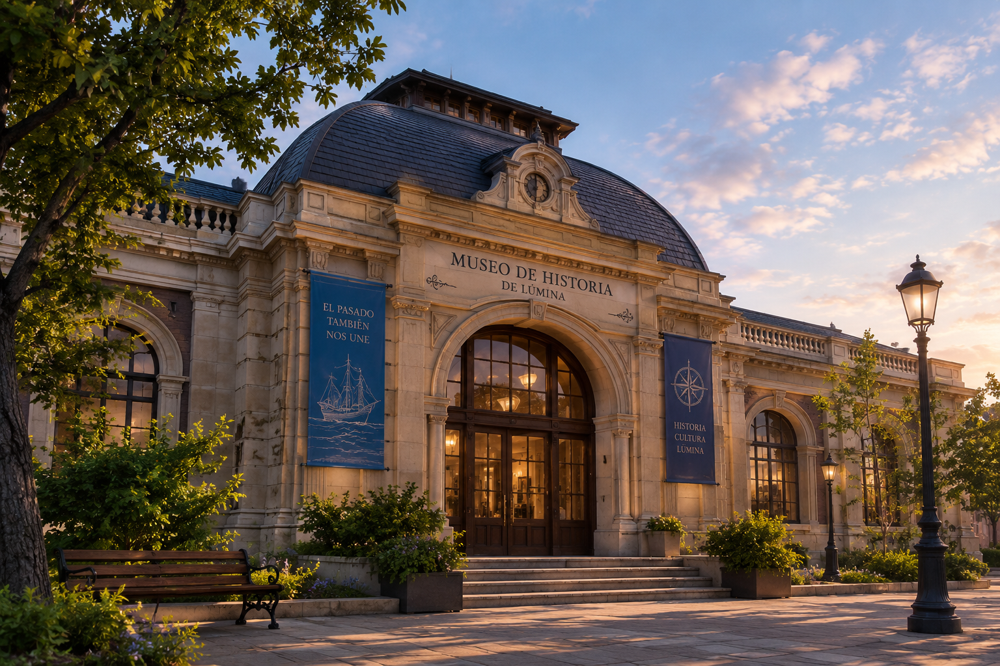

Puerto de Lúmina

Es una de las zonas más antiguas de la ciudad. Está lleno de barcos pesqueros, pequeños restaurantes y puestos donde los habitantes compran pescado fresco. Durante la noche, las luces del puerto se reflejan sobre el mar y crean uno de los paisajes más conocidos de la ciudad.
- Ubicación
- Zona costera
- Actividades
- Recorrer el puerto, visitar restaurantes y observar el paisaje.
- Se recomienda por
- Su paisaje nocturno e importancia histórica
Plaza del Reloj

Ubicada en el centro histórico, la plaza recibe su nombre por una enorme torre con un reloj construido hace más de dos siglos. Es el punto de encuentro más popular de Lúmina y suele estar llena de músicos, vendedores y turistas.
- Ubicación
- Centro de la ciudad
- Actividades
- Participar en actividades recreativas, visitar museos, visitar la feria central.
- Se recomienda por
- Su variedad creativa, y la oportunidad de visitar la cima del reloj.
Bosque de Arken

Al norte de la ciudad comienza un enorme bosque que, según las leyendas locales, existía mucho antes de que Lúmina fuera fundada. Hay senderos para caminar, pequeños lagos y antiguas ruinas escondidas entre los árboles.
- Ubicación
- Norte de la ciudad
- Actividades
- Caminatas y exploración de ruinas.
- Se recomienda por
- Su paisaje, su tranquilidad y la exploración para curiosos
Faro de Lúmina

Construido sobre uno de los acantilados, el faro es considerado el símbolo de la ciudad. Desde su cima se puede observar prácticamente toda la costa. Cada año, durante el Festival de las Luces, cientos de personas se reúnen alrededor del faro.
- Ubicación
- Sobre los acantilados del oeste.
- Actividades
- Subir al mirador, observar la costa y participar del Festival de las Luces.
- Se recomienda por
- Es el símbolo de Lúmina y ofrece una de las mejores vistas de la ciudad.
Jardines de Aurora

Son unos enormes jardines públicos ubicados cerca del centro. Tienen fuentes, esculturas, árboles centenarios y un pequeño invernadero donde se cultivan flores durante todo el año. Es uno de los lugares favoritos de los habitantes para descansar.
- Ubicación
- Cerca del centro de la ciudad.
- Actividades
- Pasear entre los jardines, visitar el invernadero, observar las esculturas y descansar junto a las fuentes.
- Se recomienda por
- Es un lugar tranquilo y agradable para descansar, rodeado de naturaleza.
Museo de Historia de Lúmina

El museo funciona dentro de una antigua estación de tren. Allí se pueden encontrar mapas, objetos de los primeros habitantes y documentos relacionados con la fundación de la ciudad.
- Ubicación
- Centro histórico, dentro de la antigua estación de tren.
- Actividades
- Recorrer las exposiciones, observar mapas antiguos y conocer objetos utilizados por los primeros habitantes.
- Se recomienda por
- Es el mejor lugar para conocer la historia y los orígenes de Lúmina.
Calle Magnolia

Una calle peatonal famosa por sus cafeterías, librerías y pequeñas tiendas. Durante las tardes suele ser una de las zonas más concurridas de la ciudad.
- Ubicación
- Zona comercial del centro.
- Actividades
- Visitar cafeterías, recorrer librerías, comprar artesanías y pasear por la calle peatonal.
- Se recomienda por
- Es una de las zonas más animadas de la ciudad y permite conocer la vida cotidiana de sus habitantes.
Mirador Nocturno

Situado sobre los acantilados al oeste, es famoso por permitir observar el cielo nocturno sin demasiada contaminación lumínica. Muchos habitantes van allí por la noche para contemplar las estrellas.
- Ubicación
- Acantilados del oeste, cerca del Faro de Lúmina.
- Actividades
- Observar las estrellas, contemplar la ciudad iluminada y disfrutar del paisaje nocturno.
- Se recomienda por
- Tiene poca contaminación lumínica y ofrece una vista espectacular del cielo y de la ciudad durante la noche.